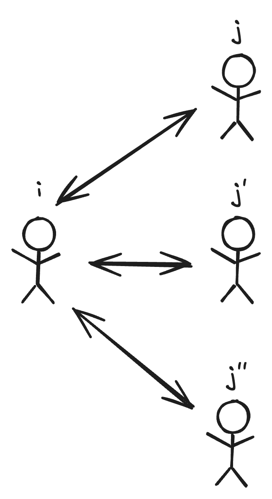
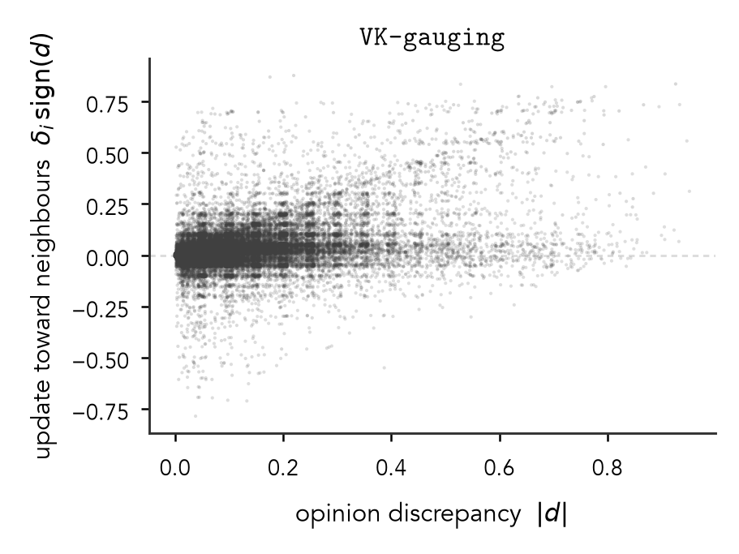
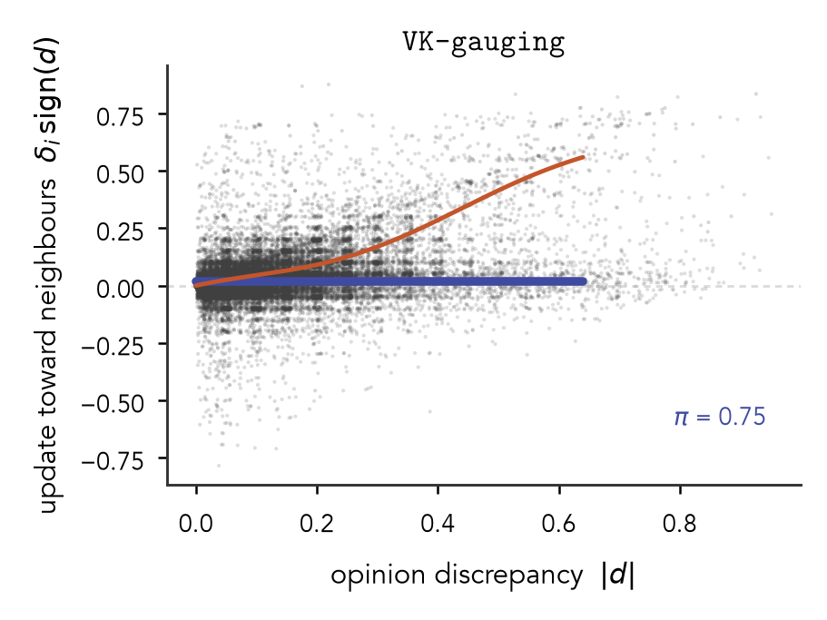

Learning Social Influence
The Santa Fe Institute
October 21st, 2026
Hi everyone! I’m Phil Chodrow
Prof. of CS at Middlebury College, a small liberal arts college in Vermont.
Students/postdocs: ask me about #LiberalArtsLife if you’re curious.
I like aikido, tea, my cats, being outside, hypergraphs, and math models of social systems.


Hey y’all, on a scale from 0-5, how good is this talk?

TODO: add white rectangles over top here to reveal the components of this figure one by one


Sherif (1935)

Sherif (1935)
A realistic model?
On a connected social graph where all agents listen (at least a little bit) to all their neighbors, DeGroot dynamics always converge to a consensus.
How do we learn the kernel from data?
Easiest case: for each \(i\) there is only one neighbor \(j\).

\[ \begin{aligned} \delta_i \approx \lambda \color{#228be6}{k_\phi}(|\color{#fd7e14}{x_j} - \color{#fd7e14}{x_i}|) \color{#fd7e14}{x_j} \end{aligned} \]

Adams, White, and Araujo (2022). “Person-to-person opinion dynamics: An empirical study using an online game.” PLoS ONE.

A more complex case: multiple neighbors

\[ \begin{aligned} \delta_i &\approx \lambda \frac{1}{|\partial i|} \sum_{j \in \partial i} \color{#228be6}{k_\phi}(|\color{#fd7e14}{x_j} - \color{#fd7e14}{x_i}|) \color{#fd7e14}{x_j} \end{aligned} \]

Vande Kerckhove + al. (2016). “Modelling Influence and Opinion Evolution in Online Collective Behaviour.” PLoS ONE.
The Team

|
Will Thompson |

|
Moyi Tian |

|
Linh Huynh |

|
Alex Wiedemann |

|
Vicki Modisette |
||

|
Phil Chodrow |

|
Heather Brooks |

Work initiated at the AMS Mathematics Research Community on Complex Social Systems (2023)!
Visualizing Retention


Vande Kerckhove + al. (2016). “Modelling Influence and Opinion Evolution in Online Collective Behaviour.” PLoS ONE.
Thanks everyone!

|
|
Will Thompson |
|
|
Moyi Tian |
|
|
Linh Huynh |
|
|
Alex Wiedemann |
|
|
Vicki Modisette |
|
|
Heather Brooks |